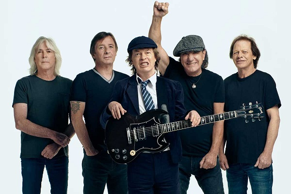

AC/DC
AC/DC es una banda de hard rock británica-australiana, formada en 1973 en Australia.

Integrantes
Brian Johnson - Voz principal
Malcolm Young - Guitarra rítmica
Angus Young - Guitarra lider
Phil Rudd - Bateria
Cliff Williams - Bajo eléctrico
Año
Disco
1990
Thunderstruck
1979
Higghway to hell
1980
Back in Black
1980
You Shook Me All Night Long